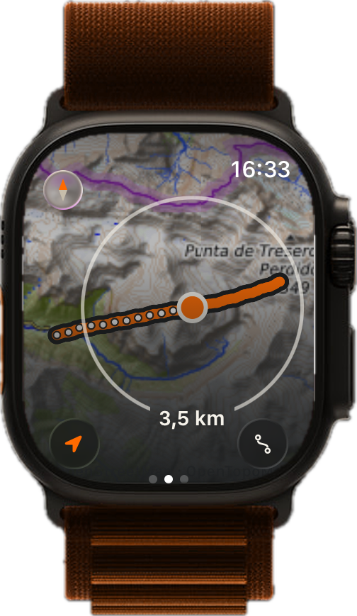
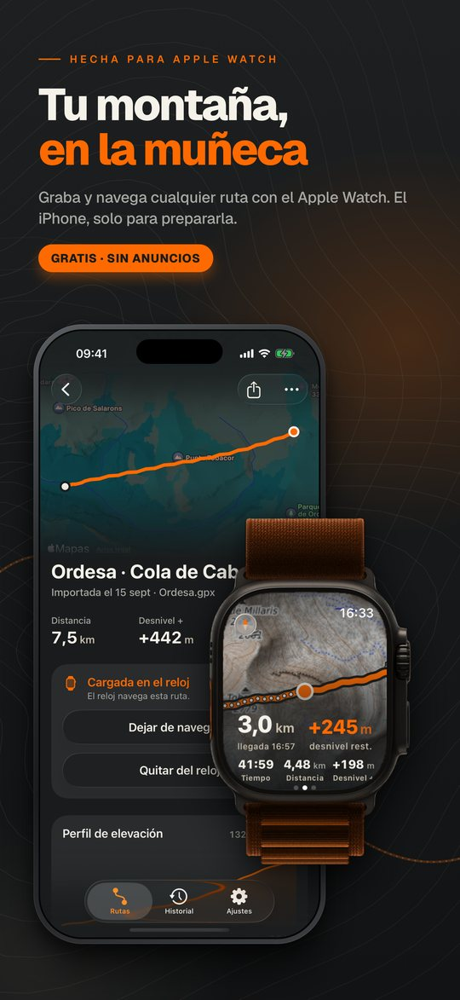
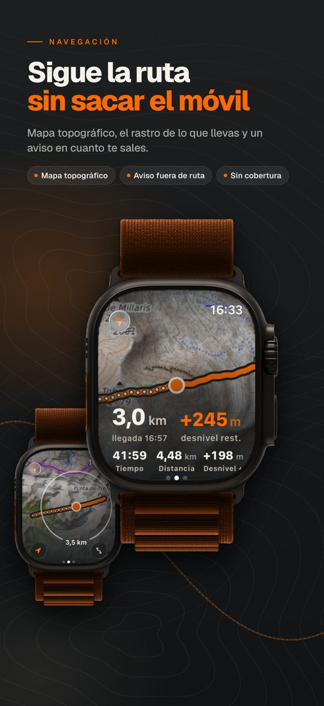
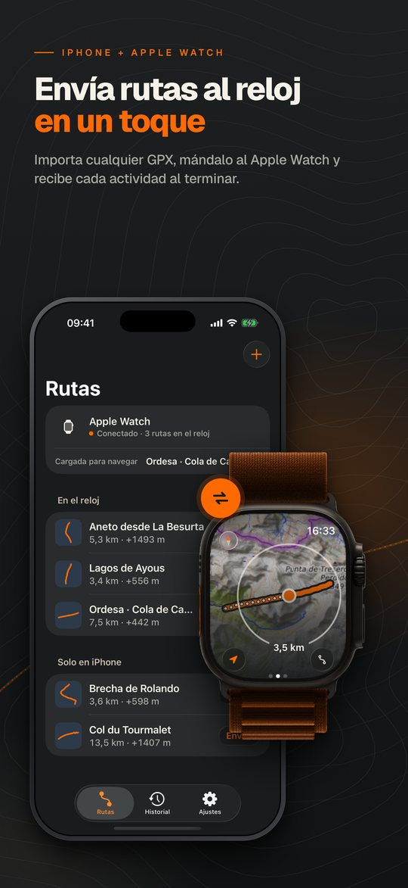
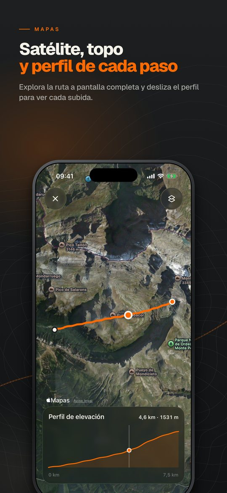
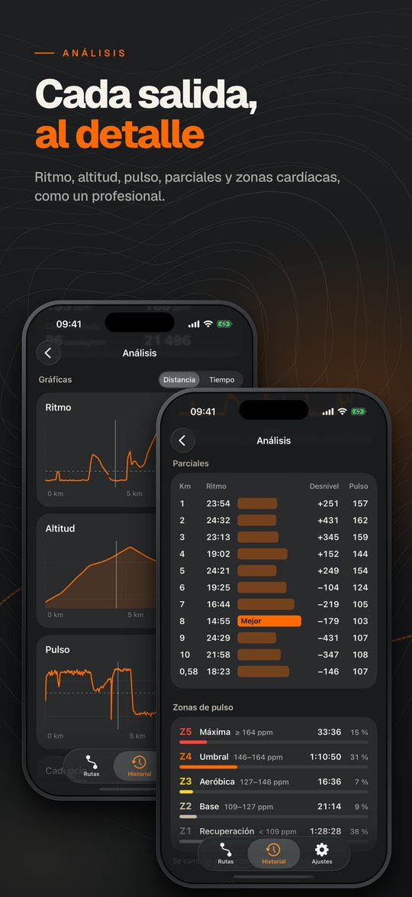
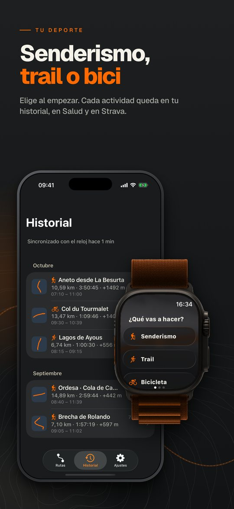
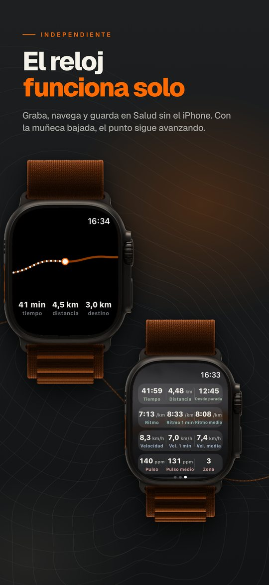
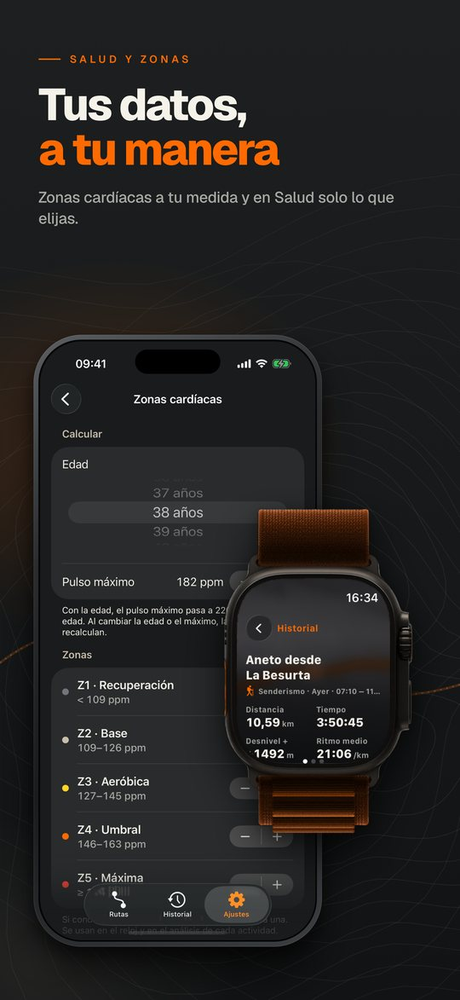

1Navega
Mapa topográfico, el rastro de lo que llevas y un aviso en cuanto te sales.
3,0km · destino
The way is yours
Graba y navega cualquier ruta con el Apple Watch. El iPhone, solo para prepararla.
Gratis · Sin anuncios · Sin suscripciones
Qué hace
Mapa topográfico, el rastro de lo que llevas y un aviso en cuanto te sales.
Distancia, desnivel, ritmo y pulso en directo. Senderismo, trail o bici.
Envía rutas GPX al reloj en un toque y recibe cada actividad al terminar.
Perfil, parciales, zonas cardíacas y mejores marcas de cada salida.

Graba, navega y guarda en Salud aunque te dejes el iPhone en casa. Con la muñeca bajada, el punto sigue avanzando.
Capturas








Carga una ruta, levanta la muñeca y a caminar.